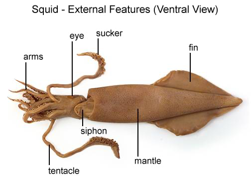
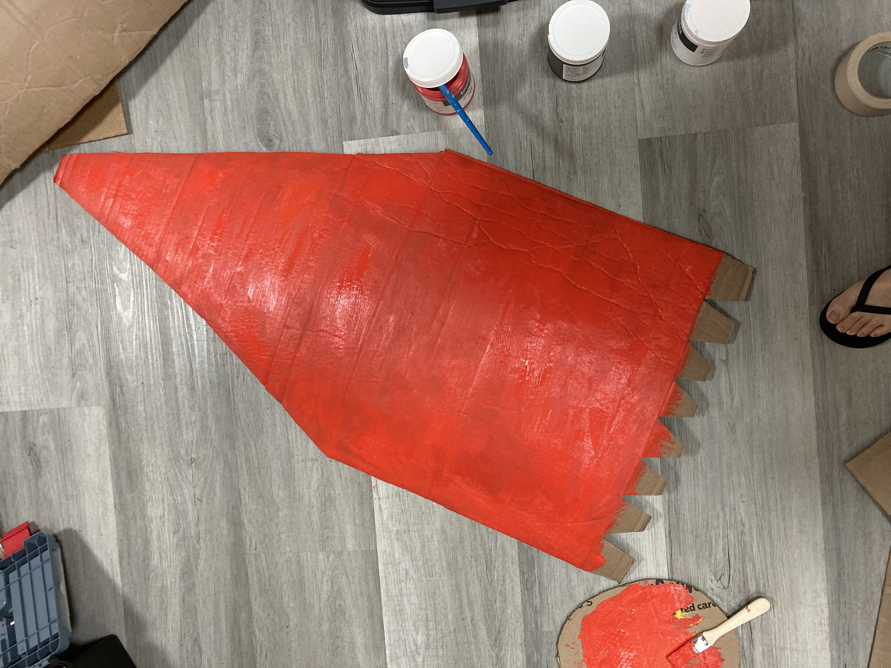
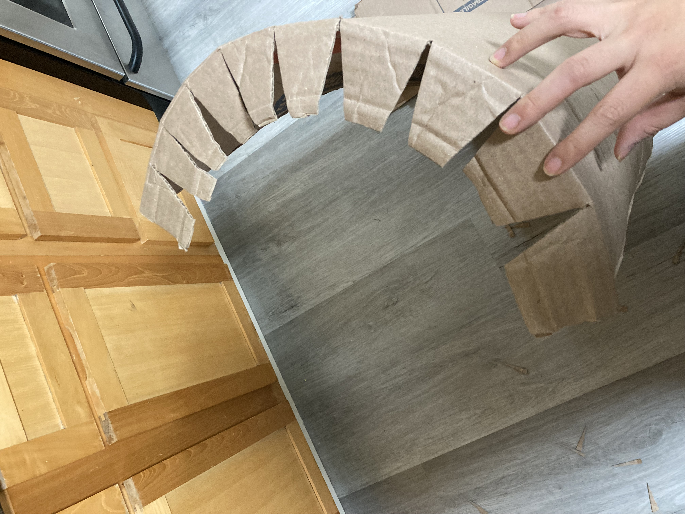
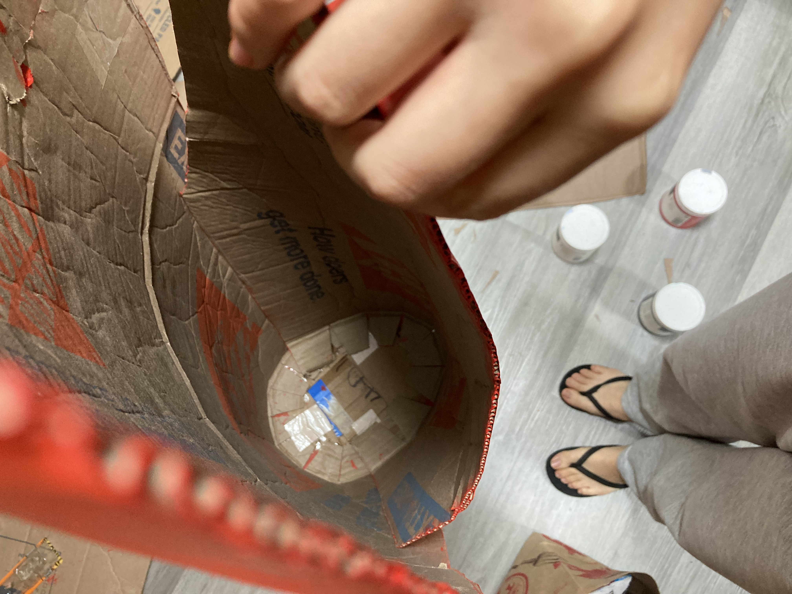
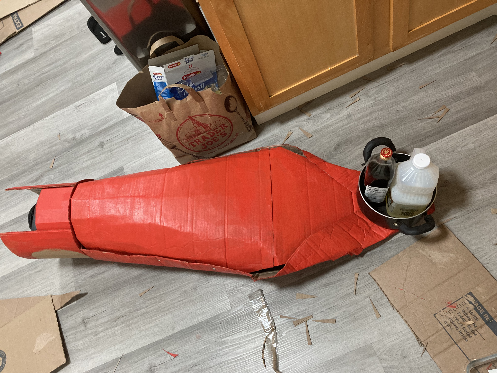
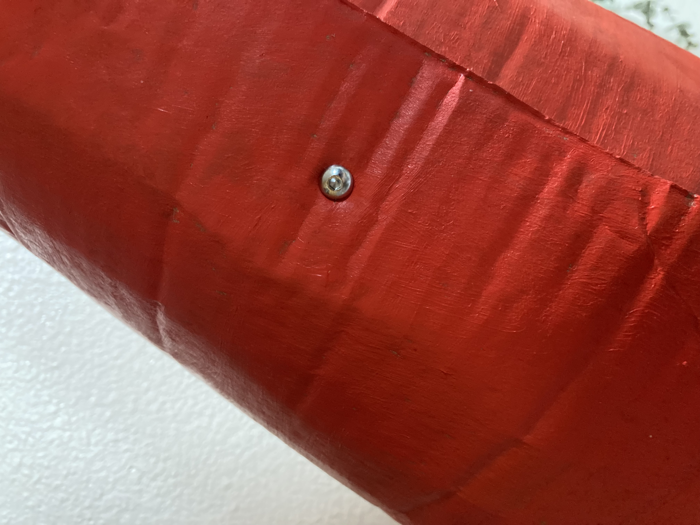
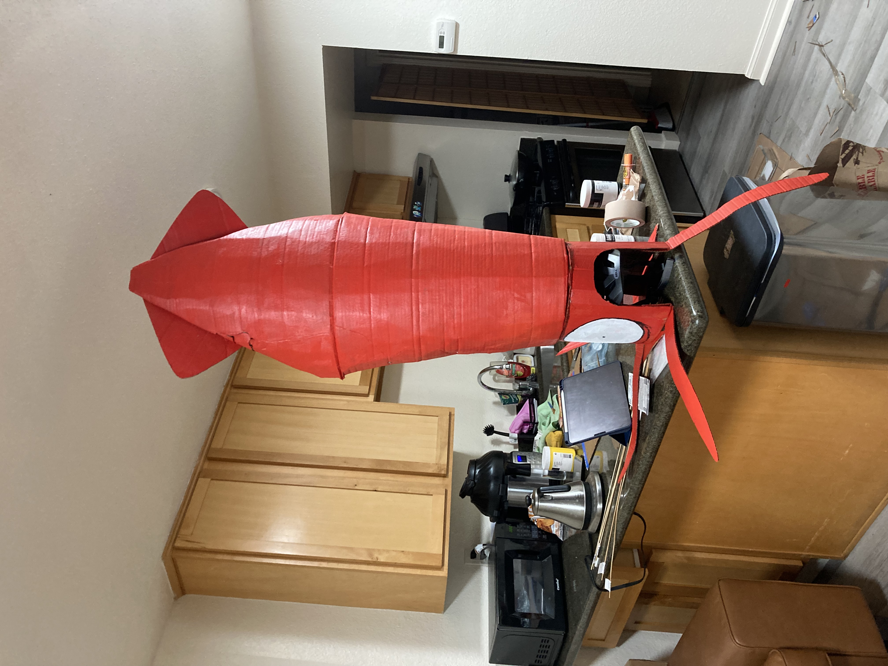
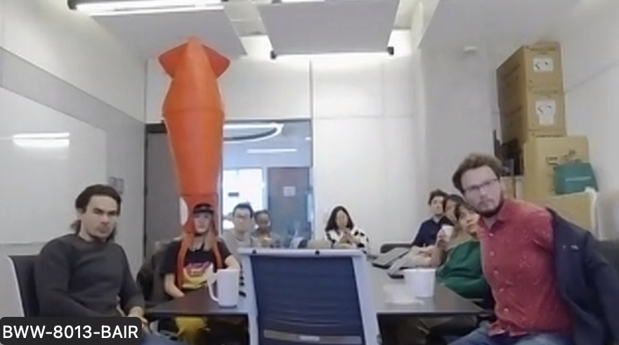

Chronicles of a mad hatter, chapter 1
'Twas the night before Halloween, when all through the house
Not a creature was stirring, not even a mouse.
Except for a grad student with a burning desire
To make a giant squid hat the color of fire.
She toiled and troubled and cauldrons bubbled,
And by Halloween sunrise her sleep debt doubled.
But on her head sat a glorious monster,
Tentacles four and red as a lobster.
They ambled along to Berkeley Way West,
Where they sat in await of the ultimate test.
The votes were cast, the opponents were sized,
And turns out they won the best costume prize.
Pardon my poetry, I just really wanted to make a Halloween version of "A Visit from St. Nicholas."
'Twas the night before Halloween, and I still didn't know what my costume would be, except that I wanted to make it myself. I had requested my labmates bring as much cardboard as they wanted to carry to lab, and Hongsuk had graciously offloaded his recycling bin to me. While lugging the cardboard home, I mulled over two options: giant squid or Shai Hulud. I went with the first because it seemed easier to make and because I missed my old fraternity tEp/Xi. I had zero plans, only vibes.

I wanted the squid to sit on my head like a clingy overgrown child, and I wanted it to be BIG, about as tall as I am. However, I had no idea how to securely attach a giant cardboard structure on my head, until I spotted my bicycle helmet out of the corner of my eye...
10:22pm. I hatched a plan to progressively attach more and more cardboard to my bicycle helmet until it became a squid. I decided to make an "outer helmet" that enveloped my bike helmet and provided a flat base for the mantle, then somehow glue a giant squid mantle to the top of the outer helmet. Time to get to work.
I traced the circumference of my bike helmet onto a piece of carboard and used it as a template to cut out the outer helmet. I cut out a place for my head to poke through and an opening in the back so I could access my helmet's size adjustment easily. I epoxied the flat top to the ring.
10:44pm. Outer helmet completed. To attach the outer helmet to my bike helmet, I slid a piece of cardboard through the slots in my bike helmet to act as an anchor. I taped the outer helmet down to the anchor. Now, we had a nice, flat surface to mount the mantle onto.
11:22pm. After eating 22 strawberries, I started on the mantle. I took an extra large Home Depot moving box I found outside (which, unbeknownst to me at the time, belonged to my roommate Kayo (I have since profusely apologized and got her a new box (at least she liked the squid))) and cut it into a squid like shape and painted it. My thought at the time was to somehow bend the mantle to fit the curve of the outer helmet, because apparently I'm a masochist who didn't think about how much easier it would be to just make a rectangular prism.
My plan was to bend the bottom of the mantle backwards to form a tab, then glue that tab onto the outer helmet. The thing is, if you want to project a curved line onto a flat surface, you have to distort it somehow. Take the Goode homolosine projection of the Earth as an example.
Thus, I had to cut away sections of the tab until the cardboard didn't overlap on itself when I bended it. The paint on the other squid mantle piece dried as I toiled away, filling the apartment with the sweet scent of acrylic paint fumes.
1:44am. This next part was by far the most technically challenging. I had to epoxy the mantle onto the top of the helmet while keeping its curvature. The ends of the mantle tended to spread outwards, while the middle tended to move inwards--a behavior governed by the biharmonic equation. I quickly applied epoxy to the bottom of the tabs, put it on, and held it there for 5 minutes with both hands while it hardened. After I guesstimated that the epoxy had solidified enough, I quickly duct-taped the tabs down and put some tubs of acrylic paint over it to weight it down. I cannot describe in words how jank this clampless setup was. You had to be there to see the panic in my eyes.
3:22am. First half of the mantle secured after three failed attempts. I then realized that attaching the second half would be doubly hard, because I couldn't easily reach into the squid to pin the tabs down now. In the end, I just winged it with the paint tubs, slathered some more epoxy around the outer edges, and prayed. It worked?
4:22am. I ate some grapes as a reward.
4:44am. One major problem remained: the top and sides of the squid's head were open, exposing its innards. I used even more epoxy to close the top, bending the cardboard back to get a more realistic triangular shape. Many thanks to my little pot, vegetable oil, and Shaoxing wine for being sufficiently heavy. Closing the sides was probably the most jank thing I have ever done. There was no way I could close it with epoxy since I lacked clamps, and I did not want to become a human clamp because I was getting impatient. I saw that I had some nuts and bolts, and I thought to myself, "oh god there's no way I'm doing this". But it was the only option.
5:22am. I cut a hole into each side of the squid and screwed those sides shut. However, a gap remained at the bottom. I had run out of nuts, so I used a wood screw and the god-given strength of 1mm thick screw threads to seal that gap shut. (Spoiler: it came apart, but after a few miles of walking and a night of drunk SF people touching it and wearing it. I'm quite impressed!)
6:44am. I ate half a bag of sweet potato chips. With the most difficult hurdles behind me, I started making the fins and tentacles. I wanted nothing to do with the epoxy anymore, so I simply cut slots into the mantle to secure the fins. I duct-taped the tentacles to the bottom of the outer helmet.
7:22am. Behold.
I shower and try to sleep.
12:10pm. KAIR lab meeting.
3:14pm. I win the BAIR computer vision Malik Prize for best costume, sponsored by the prestigiousest Malik Foundation.

9:22pm. I had to squat to get in the club. Thank you to all the random SF strangers who were enamored by the squid; it really made my day.
1:22am. The squid retires after surviving bar crawling trick-or-treating in SF, with all but a missing fin and loose screw. I didn't fare nearly as well. After taking the squid off, I felt it like a phantom limb for the rest of the night.
If I were to do this again while not operating on a tight deadline with two hours of sleep (both of which are entirely my doing), I would:
- Slot + epoxy the mantle into the outer helmet instead of just epoxying it on top so I don't have to deal with as much epoxy hell
- Make the eyes 3D
- Add moar tentacles (and suckers!)
- Be a bit more creative with the paint. I do like the boldness of the solid red, though.